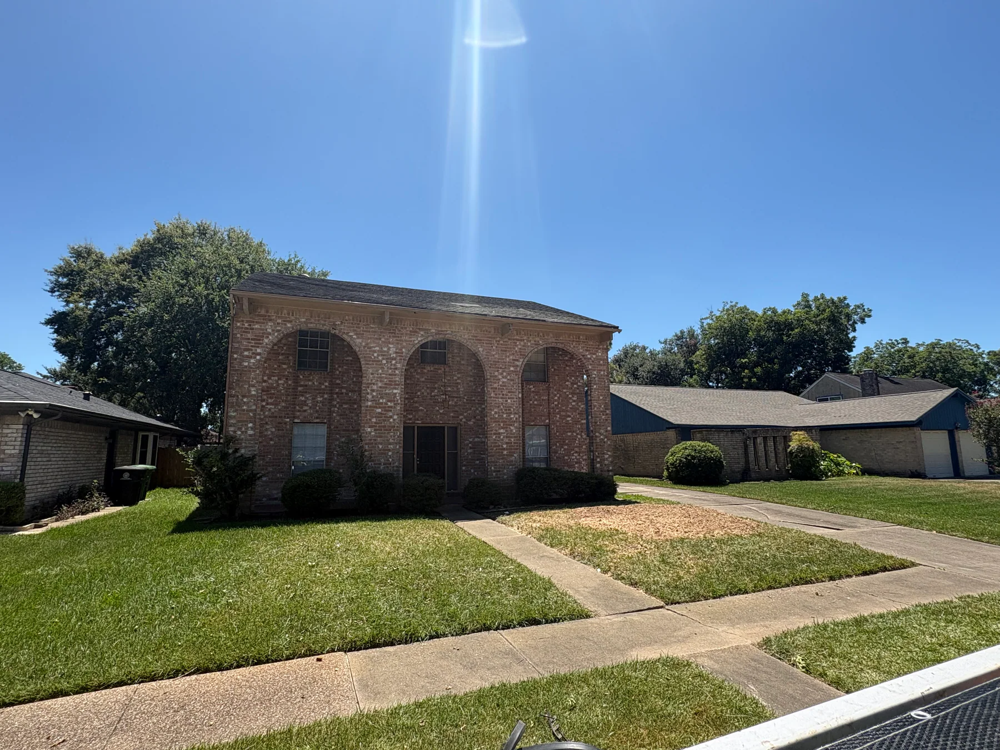

Sectional removal
Large limbs and trunk sections were cut down in manageable pieces near the home. The photo sequence shows the canopy before work and the removal progressing toward the main trunk.

Completed project · Missouri City, TX
This project documents large-tree removal close to a two-story home, organized debris handling, stump grinding, haul-off and the clean finished property.
Missouri City residential tree service
The trees stood close to the residence and over the front lawn. The work was completed in stages so cut sections, logs and brush could be handled through the property, loaded for haul-off and cleared before the final finish.
Large limbs and trunk sections were cut down in manageable pieces near the home. The photo sequence shows the canopy before work and the removal progressing toward the main trunk.
After the tree was removed, stump-grinding equipment reduced the remaining stump and helped prepare the work area for a cleaner, more usable finish.
Branches, logs and work debris were loaded and removed. The final photographs show the open front of the property after the work area was cleared.
Before, during and after
These images show the original tree canopy, sectional removal near the house, stump grinding, debris haul-off and the cleaned property after completion.
Planning a similar project?
Wide photographs help us understand the canopy, roof clearance, street access, equipment needs and likely debris route. Text the property address and photos to 832-445-6535 to begin an estimate.
Missouri City and greater Houston